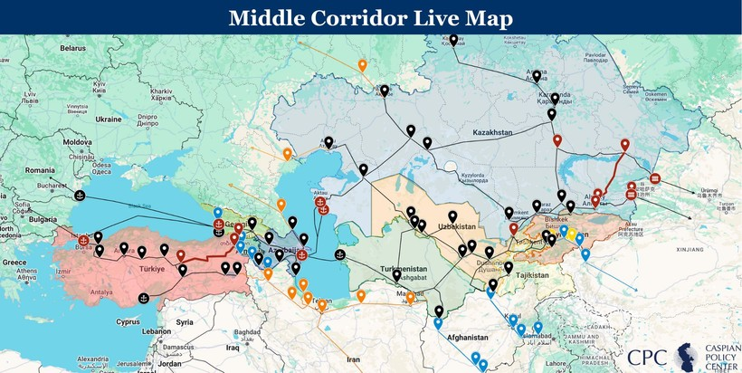

Introduction
China’s expanding economic presence in Central Asia raises a key question: can deeper economic ties strengthen regional opportunities without undermining strategic autonomy? At the first China–Central Asia Summit in Xi’an in May 2023, Xi Jinping hosted the leaders of Kazakhstan, Kyrgyzstan, Tajikistan, Turkmenistan and Uzbekistan. The summit marked a further step in Beijing’s efforts to deepen regional cooperation and strengthen its influence (Wolff 2023).
Yet deeper economic ties do not necessarily mean greater dependence, nor do they guarantee strategic autonomy. Chinese engagement creates commercial opportunities but can also expose countries to concentrated trade and transport links. Using Kazakhstan as the main case study, this blog examines how Central Asian governments can seek to hedge against over-reliance on China through diversified infrastructure finance, transport routes and economic partnerships, drawing on regional evidence where relevant.
Why connectivity matters for global business and Asian regionalism
Central Asia shows how cross-border economic networks can reshape regionalism beyond formal institutions. Wolff (2023) argues that China’s Belt and Road Initiative (BRI), launched in Kazakhstan in 2013, has strengthened Beijing’s regional influence relative to Russia’s Eurasian Economic Union. Trade between China and the five Central Asian countries rose from US$460 million in 1992 to over US$70 billion in 2022 (Wolff 2023).
For global businesses, these connections can expand market access and redirect investment and logistics flows, although the benefits depend on how trade and infrastructure opportunities are distributed across the region.
However, stronger connectivity does not necessarily lead to deeper regional integration. Using panel data from Central, South and Southeast Asia (2000–2019), Liu, Xu and Lim (2024) find that Chinese FDI is positively associated with intra-regional integration, whereas trade ties with China are negatively associated with it. This contrast suggests that the effects of economic engagement depend on its form, rather than simply its scale. Similarly, Wang, David and Cisse (2025) argue that BRI infrastructure can help overcome geographic disadvantages, although its benefits partly depend on institutional quality. Together, these findings suggest that connectivity can create opportunities, but does not automatically produce balanced regional integration.
Warm politics, cold publics
A key tension exists between governments’ pursuit of economic cooperation with China and public concerns about its growing presence. Wolff (2023) argues that Central Asian leaders have welcomed Beijing’s initiatives partly because they offer an alternative to Western pressure over democratic reform and to Russian influence. However, government support does not guarantee public acceptance. Jardine, Karibayeva and Lemon (2025) document 192 China-related protests across Central Asia between 2002 and 2023, involving concerns over environmental damage, labour, land ownership and the treatment of Uyghurs in Xinjiang. Such opposition has had practical consequences: protests over Kazakhstan’s proposed land reforms in 2016 led the government to suspend their implementation, while Kyrgyzstan cancelled the proposed At-Bashi logistics centre in 2020 following local protests.
These cases illustrate how public opposition can delay or prevent China-related projects, creating political and operational risks for investors. Russia’s war in Ukraine has also increased attention to alternative transport routes. Consequently, commercial opportunities depend not only on infrastructure and government agreements, but also on local acceptance.
Emerging trends: bigger, lopsided, rerouted
Three trends highlight both the opportunities and risks of China–Central Asia economic integration.
First, trade is growing but remains uneven. China–Central Asia trade reached US$106.3 billion in 2025, up 12% year on year. China exported US$71.2 billion worth of goods to the region and imported US$35.1 billion. Its exports included mechanical and electrical products and high-tech goods such as electric vehicles, lithium batteries and solar products (Birbayeva 2026a). This imbalance highlights the scale of commercial opportunities while raising questions about how evenly the benefits of expanding trade are distributed.
Figure 1: China’s trade with Central Asia, 2025
Source: based on Birbayeva (2026a).
Second, Kazakhstan’s trade with China reveals similar asymmetries. In the first half of 2025, Kazakhstan’s exports to China fell by nearly 10%, while imports rose by 22.8%, resulting in a US$1.8 billion trade deficit (Pokidaev 2025). For context, the deficit stood at US$0.4 billion for the full year of 2024, although these figures cover different periods and are not directly comparable. China accounted for 19.2% of Kazakhstan’s exports in 2025, making it the country’s second-largest export destination after Italy (Birbayeva 2026b). The OECD (2024) also highlights Kazakhstan’s reliance on a limited range of export commodities and trading partners, suggesting that growing trade with China does not necessarily resolve underlying economic vulnerabilities.
However, Lim, Tjia and Murashkin (2025) offer a more nuanced interpretation, arguing that Kazakhstan has preserved trade autonomy since 2013 as its trade diversified beyond resources. This suggests that exposure cannot be assessed through bilateral trade volumes alone; export composition, partner concentration and the availability of alternatives also matter.
Third, transport is being rerouted. Traffic on the Middle Corridor, also known as the Trans-Caspian International Transport Route (TITR), rose by 62% to 4.5 million tonnes in 2024. Container volumes increased by 170% to 56,500 TEU, including 35,600 TEU moving in the China–Europe direction—27 times the previous year’s volume (Interfax 2025). Nevertheless, the OECD (2023) estimated that the corridor’s capacity was at most 5% of the Northern Route’s capacity, while geographic constraints, multiple border crossings and weak regional integration continued to limit its competitiveness.

Figure 2: The Middle Corridor connecting China, Central Asia, the Caucasus and Europe
Source: Dayar and Bernard-Pearl (2025).
Based on the reported figures, China–Europe traffic accounted for approximately 63% of the Middle Corridor’s container volume in 2024. Although the route may reduce reliance on Russian transit, it does not necessarily diversify Central Asian countries’ trading partners. Its strategic value therefore depends on whether improved transport options translate into more diversified trade and commercially viable alternatives.
Implications for governments, businesses and regional actors
China’s expanding economic role creates different strategic and commercial implications across Central Asia. For governments, the key issue is whether economic engagement strengthens their ability to negotiate with external partners. Sim and Aminjonov (2024) describe China–Central Asia relations as mutually beneficial but highly asymmetrical, whereas Lim, Tjia and Murashkin (2025) argue that Kazakhstan has preserved trade autonomy through diversification. These contrasting assessments suggest that deeper economic ties do not automatically eliminate strategic choice; outcomes depend partly on governments’ ability to maintain alternatives.
For international businesses, these dynamics create opportunities but also uncertainty. Australian resource exporters and logistics service providers could use the Middle Corridor to explore Eurasian markets, but its commercial value depends on competitive transit costs, reliable delivery and access to end markets. Improved connectivity therefore creates potential market access rather than a guaranteed competitive advantage.
| Stakeholder | Opportunity | Exposure / Risk |
|---|---|---|
| Logistics firms | An alternative China–Europe route that bypasses Russia. | Capacity constraints, multiple border crossings and changes of transport mode. |
| Kazakhstan | Transit revenue and a bridge role between China and Europe; opportunities to diversify trade (Lim, Tjia & Murashkin 2025). | Commodity-heavy exports and a widening trade deficit with China. |
| Kyrgyzstan | New rail and road links to China that could improve connectivity (Wolff 2023). | Public opposition to China-backed projects, illustrated by the cancelled At-Bashi logistics hub (Jardine, Karibayeva & Lemon 2025). |
| Uzbekistan | Improved regional connectivity and access to Chinese trade and investment (Wolff 2023). | Risk of greater economic exposure to China if alternative partners and financing remain limited. |
| European Union | An alternative connectivity offer and access to Central Asian markets, supported by an overall €10 billion commitment from the EU and international partners (European Commission 2024). | Capacity constraints and coordination challenges across several countries. |
Figure 3: Opportunities and exposure from China’s expanding role in Central Asia
Source: Author’s synthesis based on Wolff (2023), Lim, Tjia and Murashkin (2025), Jardine, Karibayeva and Lemon (2025), European Commission (2024) and OECD (2023, 2024).
Policy: How governments can hedge?
Hedging means maintaining China as a major economic partner while preserving credible alternatives. As Figure 4 outlines, the challenge is to turn these alternatives into workable options rather than simply expand infrastructure.
| Core problem | Strategic impact | Policy response and trade-off |
|---|---|---|
| 1. Concentrated infrastructure finance | Limited financing alternatives may weaken governments’ bargaining power and leave projects dependent on a narrow pool of funders. | Diversify funding through EU and international partners. Alternative finance may be costlier or slower. |
| 2. Weak route competitiveness | Border delays, capacity limits and high transit costs may prevent alternative routes from becoming commercially viable. | Improve customs, regional coordination and Caspian port cooperation. Infrastructure investment alone cannot guarantee efficiency. |
| 3. Weak domestic legitimacy | Public opposition can delay or cancel projects, increasing uncertainty and undermining the reliability of investment. | Strengthen transparency, local employment and environmental assessment. Consultation may increase upfront costs and implementation time. |
Figure 4: Policy priorities for strategic hedging in Central Asia
Source: Author’s synthesis based on European Commission (2024), OECD (2023, 2024), and Jardine, Karibayeva and Lemon (2025).
The EU and its international partners’ January 2024 commitment to mobilise €10 billion in ongoing and planned investments for sustainable transport connectivity in Central Asia offers an additional financing option (European Commission 2024). However, investment commitments alone do not guarantee commercially viable projects. The OECD (2023, 2024) similarly highlights the importance of effective trade facilitation and regional coordination in improving connectivity.
Public acceptance also affects whether projects can proceed reliably. Greater transparency, local employment opportunities and environmental assessment may help address concerns surrounding China-related projects (Jardine, Karibayeva and Lemon 2025). Although these measures may increase upfront costs and extend implementation timelines, failing to address local concerns can expose projects to disruption.
Ultimately, hedging should be evaluated by whether alternatives are financially feasible, operationally reliable and capable of attracting sustained participation. The objective is to preserve meaningful economic choices, not to disengage from China.
Conclusion
China’s growing role in Central Asia creates both opportunities and risks. Kazakhstan illustrates that alternative transport routes do not automatically diversify trading relationships, while research offers differing assessments of the extent to which the country has retained trade autonomy despite its asymmetric economic relationship with China. Connectivity is more likely to create strategic options when supported by diversified trade, alternative financing and effective regional coordination. The challenge for Central Asian governments is not whether to engage with China, but whether they can develop enough viable alternatives to negotiate the terms of that engagement.
Reference list
Birbayeva, A 2026a, ‘China–Central Asia trade hits record $106 billion in 2025’, The Astana Times, 21 January, viewed 22 September 2026, https://astanatimes.com/2026/01/china-central-asia-trade-hits-record-106-billion-in-2025/
Birbayeva, A 2026b, ‘Kazakhstan’s top 10 export partners account for nearly 80% of trade in 2025’, The Astana Times, 13 April, viewed 12 October 2026, https://astanatimes.com/2026/04/kazakhstans-top-10-export-partners-account-for-nearly-80-of-trade-in-2025/
Dayar, A & Bernard-Pearl, J 2025, Middle Corridor live map, Caspian Policy Center, 9 June, viewed 12 October 2026, https://caspianpolicy.org/research/maps/middle-corridor-live-map.
European Commission 2024, Global Gateway: EU and Central Asian countries agree on building blocks to develop the Trans-Caspian Transport Corridor, Directorate-General for International Partnerships, 30 January, viewed 22 September 2026, https://international-partnerships.ec.europa.eu/news-and-events/news/global-gateway-eu-and-central-asian-countries-agree-building-blocks-develop-trans-caspian-transport-2024-01-30_en
Interfax 2025, ‘Traffic via Trans-Caspian International Transport Route up 62% to 4.5 mln tonnes in 2024’, Interfax, viewed 22 September 2026, https://interfax.com/newsroom/top-stories/110366/
Jardine, B, Karibayeva, A and Lemon, E 2025, ‘Bumps along the Belt and Road: unpacking Sinophobic sentiments in Central Asia (2002–2023)’, Europe-Asia Studies, vol. 77, no. 4, pp. 617–637, https://doi.org/10.1080/09668136.2025.2486300
Lim, G, Tjia, LY and Murashkin, N 2025, ‘Opportunities and challenges of China’s economic ties with Kazakhstan: looking back to look forward’, The Chinese Economy, vol. 58, no. 1, pp. 127–140, https://doi.org/10.1080/10971475.2024.2373643
Liu, H, Xu, C and Lim, G 2024, ‘The China effect on regional economic integration: a longitudinal study of Central, South and Southeast Asia’, Journal of the Asia Pacific Economy, vol. 29, no. 4, pp. 2110–2132, https://doi.org/10.1080/13547860.2023.2258018
OECD 2023, Realising the potential of the Middle Corridor, OECD Publishing, Paris, viewed 22 September 2026, https://www.oecd.org/en/publications/realising-the-potential-of-the-middle-corridor_635ad854-en.html
OECD 2024, Diversifying Kazakhstan’s exports: institutions, policies, infrastructures, OECD Publishing, Paris, viewed 22 September 2026, https://www.oecd.org/en/publications/diversifying-kazakhstan-s-exports_7f9cd8aa-en.html
Pokidaev, D 2025, ‘Kazakhstan trade deficit with China quadruples in 2025’, The Times of Central Asia, 15 September, viewed 12 October 2026, https://timesca.com/kazakhstan-quadruples-trade-deficit-with-china-in-2025/
Sim, L-C and Aminjonov, F 2024, ‘Statecraft in the steppes: Central Asia’s relations with China’, Journal of Contemporary China, vol. 33, no. 148, pp. 618–633, https://doi.org/10.1080/10670564.2022.2136937
Wang, J, David, LK and Cisse, II 2025, ‘China’s economic strategy in post-communist nations: trade, FDI, and infrastructure investments under the Belt and Road Initiative’, Post-Communist Economies, vol. 37, no. 7, pp. 933–973, https://doi.org/10.1080/14631377.2025.2517981
Wolff, S 2023, ‘How China is increasing its influence in Central Asia as part of global plans to offer an alternative to the West’, The Conversation, viewed 22 September 2026, https://theconversation.com/how-china-is-increasing-its-influence-in-central-asia-as-part-of-global-plans-to-offer-an-alternative-to-the-west-206035